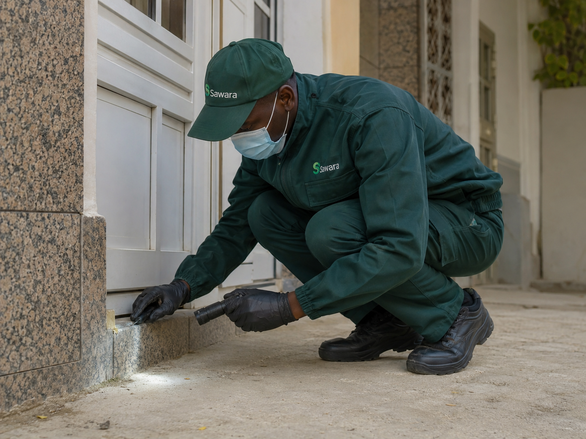
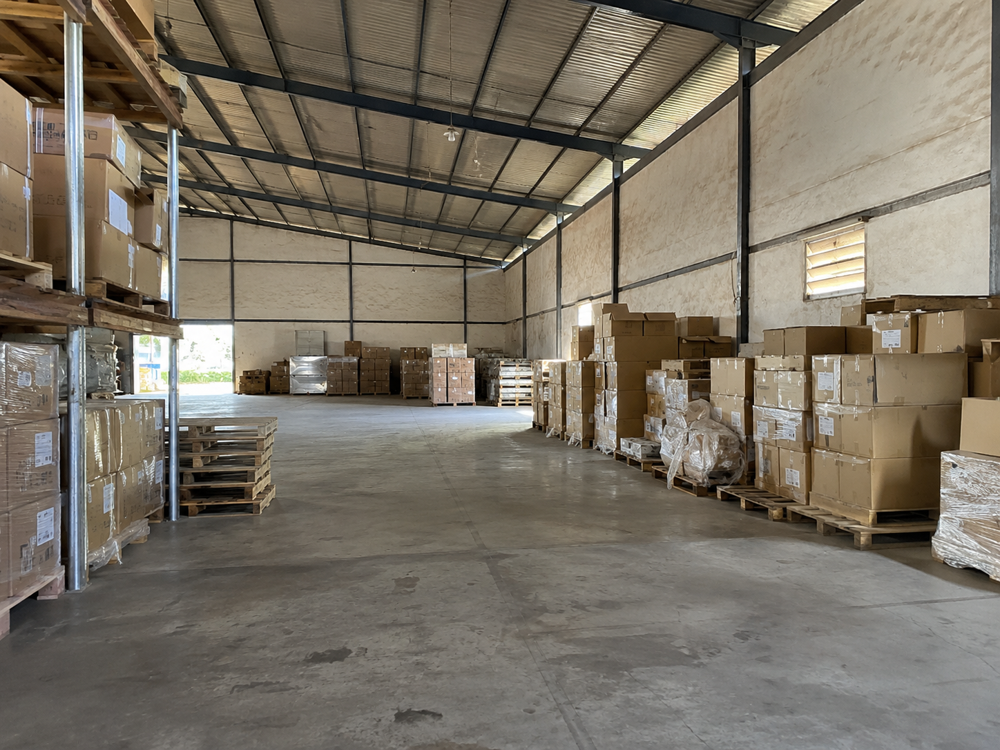

SawaraEntreprise
77 552 64 19
Devis WhatsApp
WhatsApp
Rats, souris, surmulots : les rongeurs prolifèrent vite dans les zones denses de Dakar. Sawara Entreprise intervient sur place pour identifier l'espèce, traiter les foyers actifs et bloquer les voies d'entrée. Devis gratuit sur WhatsApp.

Dakar concentre une densité urbaine élevée, des réseaux d'égouts vieillissants et une gestion des déchets sous pression. Ces conditions réunies font du Grand Dakar — Médina, Pikine, Parcelles, Guédiawaye — un terrain particulièrement favorable aux rongeurs.
Le surmulot, aussi appelé rat d'égout, vit sous les dalles et dans les canalisations. Il remonte dans les cuisines, les réserves et les entrepôts à la recherche de nourriture. Le rat noir, lui, grimpe dans les faux plafonds et s'installe dans les combles ou les charpentes des bâtiments anciens.
En hivernage, les inondations chassent les colonies de leurs zones habituelles et accélèrent leur migration vers les habitations et locaux professionnels. Une infestation détectée tard devient rapidement difficile à maîtriser : un couple de rats peut donner plusieurs dizaines de descendants en quelques mois.
Les produits vendus en grande surface traitent souvent la surface sans atteindre la source. Un technicien formé identifie l'espèce, localise les gîtes et les voies d'accès, et propose une solution adaptée à la configuration réelle du lieu. Voir aussi notre page sur la désinsectisation au Sénégal pour une approche globale des nuisibles.
Chaque espèce a ses habitudes, ses voies d'accès et ses points faibles. Sawara adapte son approche à ce que le diagnostic révèle sur place.
Le plus répandu à Dakar. Vit dans les égouts, sous les dalles et dans les réserves alimentaires. Peut atteindre 500 g et creuser des galeries sous les fondations. Traitement par raticides sécurisés en boîtes d'appâts et colmatage des voies d'entrée.
Grimpeur agile qui colonise les faux plafonds, combles et charpentes. Fréquent dans les bâtiments anciens et les entrepôts en hauteur. Diagnostic des zones de passage, traitement ciblé et signalement des points d'accès à colmater.
Passe par des interstices de moins d'un centimètre. S'installe dans les cuisines, les tiroirs et les stockages alimentaires. Pièges mécaniques ciblés et raticides adaptés selon la présence de personnes ou d'animaux domestiques.
Risque sanitaire et réglementaire majeur dans la restauration et le stockage alimentaire. Sawara intervient avec un protocole adapté aux contraintes d'exploitation : horaires décalés, discrétion, rapport d'intervention disponible.
Chaque intervention inclut un diagnostic des voies d'entrée : joints défectueux, passages de câbles, grilles manquantes. Sawara signale les points à colmater pour réduire le risque de retour durablement.
Pour les sites à risque élevé (restauration, santé, stockage), un plan de contrôle régulier permet de surveiller l'activité des rongeurs et d'intervenir rapidement avant qu'une infestation ne s'installe.
Identification de l'espèce, évaluation du niveau d'infestation, repérage des zones de passage, des gîtes et des voies d'entrée. Base indispensable pour choisir le traitement adapté à votre situation réelle.
Raticides sécurisés en boîtes d'appâts, pièges mécaniques ou gel selon l'espèce, le type de lieu et la présence de personnes ou d'animaux. Produits appliqués selon les règles en vigueur, dans des zones adaptées.
Signalement des points d'entrée à boucher, des zones à assainir et des pratiques à adapter (stockage alimentaire, gestion des déchets) pour réduire significativement le risque de retour.
Pour les infestations importantes ou les sites à risque, un plan de contrôle régulier permet de vérifier l'efficacité dans le temps et d'intervenir rapidement si une activité réapparaît.
Les rongeurs ne font pas de distinction entre un appartement, un restaurant ou un entrepôt. Sawara adapte son protocole à chaque contexte.
Particuliers : appartements, maisons, villas. Intervention discrète, consignes claires, respect des personnes et des animaux domestiques présents.
Restauration et hôtellerie : la présence de rongeurs dans un espace de restauration représente un risque sanitaire immédiat. Intervention planifiée en dehors des heures de service, rapport disponible si nécessaire pour répondre aux obligations réglementaires.
Entrepôts et bureaux : stockage alimentaire, locaux techniques, espaces de travail. Traitement adapté à la superficie et au type de denrées stockées. Voir notre page traitement cafards Dakar pour les infestations d'insectes en milieu professionnel.
Sawara intervient principalement dans le Grand Dakar. Des déplacements sont possibles selon la nature et l'urgence de la demande.
